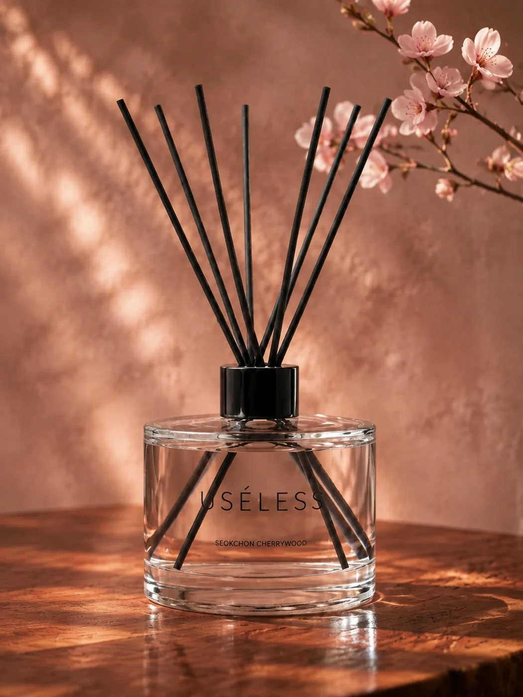
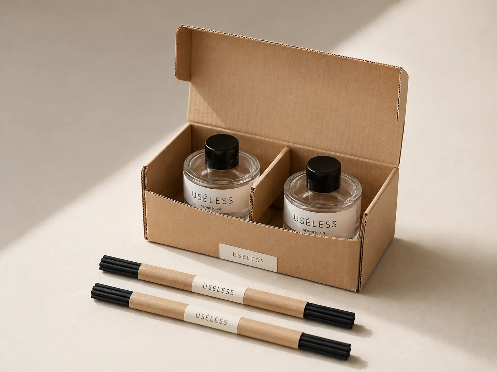
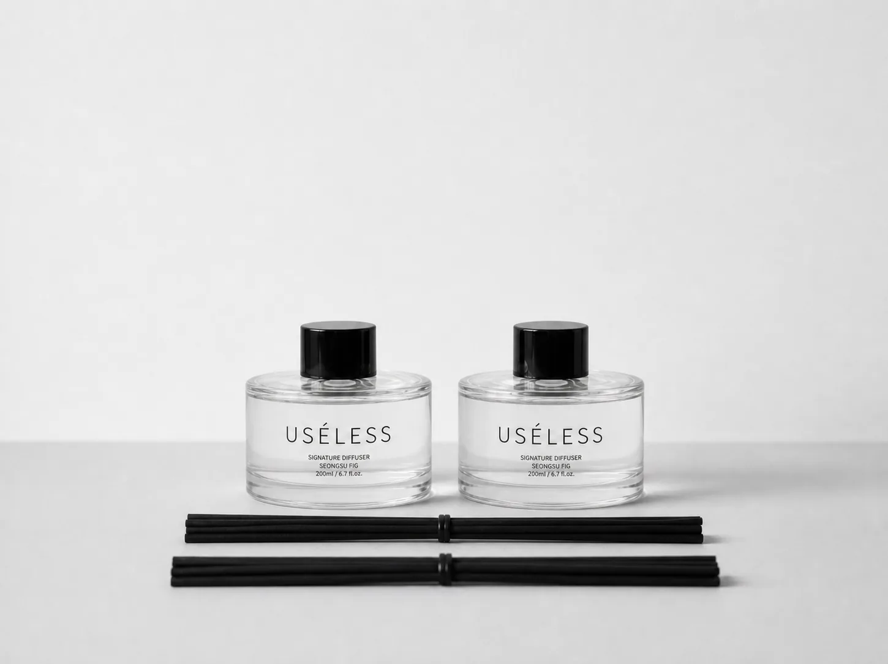
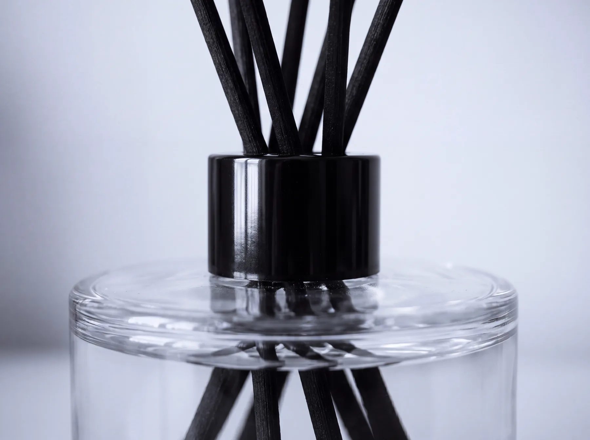

서울에서 만난 장면을, 여행이 끝난 뒤에도 가까이 두고 싶은 마음.
USÉLESS SEOUL / Creative company
쓸모, 그 너머에남는 것들.
필수는 아니지만 삶의 온도와 감정을 바꾸는 것들. 유슬레스서울은 기억하고 싶은 장면과 곁에 두고 싶은 마음을 향과 오브제로 만드는 서울의 창작회사입니다.
AI와 효율을 이야기하는 시대에, 우리는 사람의 기억과 취향에 주목합니다.
Things don't have to be useful to matter.Brand note / Why USÉLESS
THINGS THAT MATTER쓸모없어 보이지만,
버릴 수 없는 것들.
WHY WE KEEP THINGS
왜 이 물건을
곁에 두고 싶을까요?
곁에 두고 싶을까요?
어떤 물건에는 함께한 사람과 지나온 시간이 남습니다. 그 기억을 다시 꺼내고 싶어, 혹은 매일 바라보는 즐거움 때문에 우리는 작은 물건 하나를 곁에 둡니다.
What useless means
갖고 싶은 마음에는,
저마다의 이유가 있습니다.
상대가 좋아할 향과 모양을 고르고, 이야기를 함께 건네는 즐거움.
집과 카페, 책상 위에 향과 오브제로 나만의 분위기를 더하는 선택.
매일 바라보는 것만으로도 좋은, 곁에 두고 싶은 작은 물건.
좋은 향은 제품의 기본입니다. 여기에 곁에 두고 싶은 형태와 기억할 만한 이야기를 더해, 선택하고 선물할 이유를 만들고자 합니다.
One belief / Two answers
유슬레스서울
유슬레스서울은 두 향 브랜드를 만드는 회사입니다. USÉLESS는 서울의 장면을 간직하고 싶은 마음에서, amaimü는 내 책상 위 작은 즐거움에서 출발합니다.
Next / Future flagship
USÉLESS그날의 서울을,
그날의 서울을,
오늘의 공간에.
여행자에게는 서울의 기억을 이어주는 물건으로, 일상에서는 취향을 선물하고 집과 카페를 가꾸는 향으로 다가갑니다.
USÉLESS 세계 보기
Now / First consumer brand
amaimü내가 머무는 자리,
내가 머무는 자리,
매일 받는 선물처럼.
귀여워서 내 책상에 놓고 싶은 향. 나를 위한 작은 선물로, 친구의 취향을 생각한 선물로 다가갑니다.
amaimü 세계 보기01 / SCENT & OBJECT
좋은 향에서 시작하는,
곁에 두고 싶은 제품.
무화과 우드 두 제품을 먼저 준비하고, 서울의 다른 장면을 담은 네 가지 향을 개발하고 있습니다. 마음이 가는 향과 모습을 함께 살펴보세요.

Miss Fig
무화과와 우드, 내 책상 위 작은 즐거움.
Fig · Plum · Hinoki · Cypress · Cedarwood · Sandalwood
제품 이야기 보기 ↗
성수 무화과
기억하고 싶은 서울의 오후를 담은 무화과 우드.
Fig · Plum · Hinoki · Cypress · Cedarwood · Sandalwood
제품 이야기 보기 ↗
호텔 블랭킷
깨끗한 침구와 부드러운 나무의 포근함.
클린 · 라벤더 · 머스크
제품 이야기 보기 ↗
서울숲의 아침
밝은 시트러스와 초록 나무의 서늘한 아침.
Green Leaf · Morning Air · Hinoki · Cedarwood · Soft Musk
제품 이야기 보기 ↗
석촌 체리우드
체리와 투명한 꽃잎 뒤에 남는 봄의 나무.
Cherry · Rose Petal · Cedarwood · Sandalwood · Musk
제품 이야기 보기 ↗
카페 플라워티
따뜻한 화이트티 위로 피어나는 부드러운 꽃향.
Bergamot · Floral Tea · Black Tea · White Musk
제품 이야기 보기 ↗Miss Fig와 성수 무화과는 같은 무화과 우드 향을 바탕으로 라벨·캡·리드의 표정과 브랜드 이야기를 달리합니다.
02 / WHAT YOU RECEIVE
상자를 열고,
내 공간에 놓기까지.
Miss Fig와 성수 무화과는 그랜드라운드 200ml 두 병을 한 세트로 준비합니다. 두 브랜드는 같은 박스 구조를 쓰고, 브랜드별 스티커로 구분합니다.


- 보틀
- 그랜드라운드 유리병
200ml × 2병 - 리드
- 길이 25cm
블랙 / 화이트 - 외포장
- 공용 무인쇄 E골 박스
기본 칸막이 + 브랜드 스티커
03 / WHY THESE DETAILS
같은 형태 위에,
서로 다른 취향을.
무엇을 선택했는지, 그 선택이 어떤 모습으로 이어지는지 사진 가까이에서 설명합니다.

USÉLESS / BLACK & CLEAR
공간의 질감이 보이도록.
투명 유리 보틀에 무광 블랙 캡과 블랙 리드를 선택했습니다. 절제된 색과 레터링으로 나무·책·유리 같은 주변 물건과 어울리는 모습을 준비합니다.

AMAIMÜ / A LITTLE COLOR
매일 눈길이 가도록.
유광 실버 캡, 화이트 리드와 컬러 레터링을 선택했습니다. 손으로 그린 듯한 라벨의 표정으로, 책상 위에 작은 즐거움을 더하는 디자인입니다.
포장은 구조부터 단순하게.
두 유리병 사이에는 기본 칸막이를 두고, 리드는 별도 고정 구조 없이 동봉하는 방향입니다. 상자에 직접 인쇄를 더하는 대신 브랜드별 스티커를 사용합니다. 공용 구조 안에서도 두 브랜드를 알아볼 수 있게 준비합니다.
내가 머무는 자리,
매일 받는 선물처럼.
How we make / Our questions
만드는 동안,
세 가지를 묻습니다.
향과 형태, 사용하는 순간을 함께 생각합니다. 바라볼 때도 사용할 때도 마음이 가는 물건이 되도록, 다음 질문을 제품을 만드는 기준으로 삼습니다.
- 01 / SCENT다시 맡고 싶은 향인가?향의 인상과 완성도
- 02 / OBJECT그런데도 곁에 두고 싶은가?형태와 공간의 어울림
- 03 / GIFT누군가에게 선물하고 싶은가?취향과 이야기를 건네는 경험
Evidence becomes the next object
향에서 시작해,
곁에 둘 물건으로.
- 01곁에 두고 싶은 마음을 살핍니다Belief
- 02서울과 일상의 장면을 고릅니다Scene
- 03향과 형태를 함께 만듭니다Object
- 04실제 사용 경험을 확인합니다Test
- 05고객의 선택과 반응을 살핍니다Evidence
- 06배운 것을 다음 오브제에 담습니다Next object